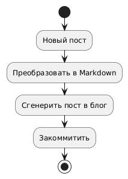
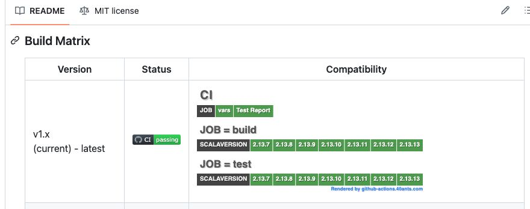

Страница 5
SEO для Telegram канала
posted on 2025-02-14

Недавно я писал про то, что сделал чат-бота, который умеет публиковать посты из телеграм канала на сайте. Основная цель этого бота в том, чтобы привлечь в канал пользователь из органического поиска. SEO штука не быстрая, пока не понятно насколько хорошо это работает, ведь сначала надо чтобы поисковые боты проиндексировали новый контент, добавили его в выдачу, да и над раскруткой сайта в целом тоже надо работать.
Однако я тут задумался, как оценить эффективность привлечения новых подписчиков с помощью постов на сайте? Ведь Яндекс Метрику нельзя навесить на телеграм канал. В идеале хотелось бы построить классическую воронку конверсии заходов с поиска на сайт, переходов с сайта в телеграм канал и финальную конверсию в подписчика. И вот какие варианты я нашел.
В идеале, хотелось бы мерять переходы для каждого поста в отдельности. Для этого нужно чтобы ссылки на телеграм для каждого поста были уникальны. Такого можно добиться создавая под каждый пост отдельную invite-ссылку.
Какой плюс есть у способа с созданием отдельных инвайт-ссылок:
- Детальная информация о количестве регистраций с каждого поста на сайте.
Минусы:
- Проходя по ссылке, пользователь попадет просто в канал, а не на конкретное сообщение, соответствующее посту на сайте.
- Неизвестно получится ли автоматически вытаскивать статистику о количестве регистраций с каждой invite-ссылки.
- Так же я не нашел информации о том, есть ли какое-то ограничение на число invite ссылок. Если есть, то бот рискует упереться в этот потолок и такой способ перестанет работать.
Если лимит на число invite ссылок все же есть, то можно использовать одну ссылку для всех публикаций в блоге. Но тогда мы теряем тот единственный плюс, ради которого всё затевалось.
Кроме того, для меня первый из минусов перевешивает желание получать детальную статистику. Ведь теряется удобство для пользователя - мы ломаем сценарий "Перейти по ссылке и обсудить пост в телеграм канале". Но может я преувеличиваю важность этого сценария?
Теория связанности всего только лишь теория?
posted on 2025-02-12

В одном из первых постов, я писл что 40Ants это холистическое IT агенство. И я не ошибся. Сегодня я получил подтверждение того, что "всё связанно" (так кстати, и Дирк Джентли говорил).
Некоторое время назад мне в рекомендациях Яндекс Книг попалось произведение Атула Гаванде "Чек лист". На днях я закончил слушать эту аудио-книгу, и со мной начали приключаться чудеса. Буквально за один день из разных источников мне прилетела информация про чеклисты, которые люди используют для различных задач.
Первым чеклистом был чеклист по выбору парсера для сайта, упомянутый в посте из рассылки PY-CY, на которую я подписан. Пост от части про SEO, но больше про разные виды парсеров. Этой темой я понемногу интересуюсь и даже сделал фреймворк для парсинга ScrapyCL. А тут чеклист подогнали.
Вторым номером, в тот же день прилетел пост от коллеги про то, как правильно составлять отчет от проделанной работе. Если у вас в команде происходят ежедневные синки, то такой список - крайне полезная вещь.
А из поста коллеги, другой человек сослался на статью про "Стоп-слова, являющиеся маркерами в требованиях", где тоже есть чеклист, позволяющий убедиться, что требования к программному обеспечению сформулированы правильно.
Удивительно так же и то, что буквально полгода назад я изучал книгу Software Requirements (Karl Wiegers and Joy Beatty). A тут вдруг снова получил информацию о том, как правильно описывать требования к ПО.
Так что, всё связанно, и никуда от этого не деться!
Как включать протухшие workflow на GitHub Actions?
posted on 2025-02-11

Я не знаю, может это со мной что не так, но иногда мне приходят в голову идеи, реализация которых возможно никому на свете кроме меня и не нужна. Вот одна из таких идей.
У меня довольно много проектов на GitHub и у большинства из них есть workflow, которые регулярно запускают тесты на GitHub Actions. Зачем регулярно, а не только на пулл реквест? Потому что окружающий мир меняется - выходят новые версии SBCL, библиотеки-зависимости меняются, так что даже если мой код остается неизменным, в какой-то момент он может перестать работать и чем раньше я об этом узнаю, тем проще будет починить проблему. Вот для этого раз в неделю мои тесты и запускаются.
Есть только одна проблема - если в проекте больше месяца нет коммитов, GitHub автоматически отключает workflow и тесты перестают запускаться. И даже после того, как в проекте появляется PR, надо идти и вручную включать workflow. Это бесит.
И вот я подумал, было бы классно сделать сервис, который бы автоматически включал отключившиеся workflow. Как вам такая идея?
Красота для LispWorks
posted on 2025-01-31

Когда я впервые увидел LispWorks IDE, она показалась мне довольно непривычной и допотопной что ли. Там нет многих привычных вещей из Emacs. Но оказывается, если приложить усилия, то можно сделать из этого IDE конфетку. Но вероятно надо быть прямо очень мотивированным к тому, чтобы писать код именно в интерфейсе LispWorks, а не подключившись к нему из Emacs.
Недавно на Reddit анонсировали библиотеку расширений для LispWorks - lw-plugins. Она добавляет сайдбар с деревом папок, кастомные иконки, фолдинг докстрингов и многое другое. На скриншоте к моему посту демо некоторых фич.
Я добавил этот проект в "lispworks" дист на Ultralisp.org и теперь расширения можно установить легко и просто с помощью Quicklisp.
Приятно, когда люди вкладывают душу в подобные проекты.
Maxima скомпилировали для запуска в браузере!
posted on 2025-01-29
Maxima это программа для работы с математическими выражениями. Примечательно то, что эта система написана на Common Lisp.
И вот недавно на Reddit появилось сообщение, что Maxima удалось скомпилировать в WebAssembley так что теперь её можно запустить прямо в браузере.
Я записал для вас небольшую гифку с демкой, а кому интересно, тот может сам потыкать в пример развернутый на сайте:
http://maxima-on-wasm.pages.dev/
Что в этой истории примечательного? То что компиляция в WebAssembly расширяет возможности использования Common Lisp. Я пока не погружался в детали того как это работает, но судя по тому, что в данном проекте использовался ECL (Embeddable Common Lisp), могу предположить, что Maxima транслировали в C, а затем уже собрали в WebAssembly.
Прототип Static Site Bot
posted on 2025-01-28

Возможно некоторые из вас помнят, как почти год назад я писал про идею сервиса, который умеет транслировать контент из телеграм канала в статический вебсайт. Если не помните, то вот ссылка: https://40ants.com/ru/posts/telegram-reposter/
Основная фишка этой идеи в том, что поисковые роботы будут хорошо индексировать статический сайт. Уже существует довольно много "виджетов" для встраивания телеграм канала в сайт, но все они не видны для поисковых роботов. А вот статические странички будут индексироваться очень хорошо, и приводить к вам в канал новых подписчиков.
И вот, не прошло и года, как я нашел время и собрал прототип. Пока что он работает только для этого канала и транслирует все посты в блог https://40ants.com/ru/posts/
Для того, чтобы превратить мой прототип в полноценный продукт, предстоит ещё много работы, а пока что буду оценивать его полезность на своем канале. Кстати, если у кого-то есть идеи, как посчитать переходы с сайта в Telegram канал, пишите в комментариях, буду рад любым советам.
Почему GC SBCL может не освобождать память?
posted on 2025-01-18
Последнее время я работаю над новой версией фреймфорка для создания Telegram ботов. Этот фреймворк использует библиотеку реализующую акторы. И нем обнаружился досадный баг, который я намеревался исправить. Однако в процессе исправления оказалось, что оно может повлиять на производительность. Хорошо что у автора отыскался benchmark с помощью которого можно проверить скорость работы актора.
К моему удивлению этому бенчмарку не хватало 4G памяти для хоть сколько-нибудь длительной работы. Более того, если бенчмарк запустить ненадолго, то оказывалось, что после его работы процесс "толстел" на 2.5G и не отпускал эту память до тех пор, пока не сделаешь вручную (sb-ext:gc :full t).
Это поведение показалось крайне странным. Как вообще можно использовать это язык в production, если он не отпускает память!?
Так я оказался втянут в исследование того, почему garbage collector SBCL не очищает кучу мусора оставшуюся после теста.
Прошло три дня.
После некоторых исследований у меня появилась гипотеза, почему GC не очищает память.
Дело в том, что в бенчмарке N потоков генерят сообщения к одному актору. Если актор не успевает разгребать сообщения, то те накапливаются в очереди. Тест заканчивается, когда все сообщения в очереди обработаны.
Когда в очереди много сообщений и срабатывает GC, то он видит, что на эти сообщения есть ссылки, и не может их подчистить, а потому перекладывает эти объекты в более старшее поколение. И чем дольше разгребается очередь в процессе генерации объектов, тем больше таких объектов оказывается в старших поколениях garbage collector.
Когда тест заканчивается, то ссылок на сообщения уже нет, но из-за того, что GC поместил их в старшие поколения, при регулярных запусках он до этих объектов не добирается и они так и остаются висеть в памяти. А вот (gc :full t) их подбирает и подчищает.
Как я это понял? Хотелось бы ответить: "Очень просто!", но нет 🙁
Сначала я решил поисследовать природу объектов, остающихся висеть в памяти после бенчмарка и написал вот такую функциюЖ
(defun get-random-dynamic-object ()
(let ((count 0))
(sb-vm:map-allocated-objects (lambda (obj type size)
(declare (ignore obj type size))
(incf count))
:dynamic)
(let ((random-idx (random count))
(found-obj nil)
(current-idx 0))
(sb-vm:map-allocated-objects (lambda (obj type size)
(declare (ignore type size))
(when (= current-idx random-idx)
(setf found-obj
(trivial-garbage:make-weak-pointer obj)))
(incf current-idx))
:dynamic)
(values found-obj
random-idx
count))))
она достает из памяти случайны объект и возвращает weak указатель на него. Почему weak указатель? Чтобы не возникло лишней ссылки на объект.
Выяснилось, что значительная часть объектов, это сообщения из очереди актора:
#<weak pointer: (#<ACTOR path: /user/actor-365, cell: #<ACTOR actor-365, running: NIL, state: NIL, message-box: #<MESSAGE-BOX/BT mesgb-366, processed messages: 8000001, max-queue-size: 0, queue: #<QUEUE-UNBOUNDED {70050E0113}>>>>
NIL NIL)>
Далее я попытался выяснить а не держит ли кто ссылки на эти объекты. Для этого в SBCL есть функция поиска корней:
CL-USER> (sb-ext:search-roots (loop repeat 3 collect...
posted on 2025-01-18
CL-USER> (sb-ext:search-roots (loop repeat 3 collect (get-random-dynamic-object))
:print :verbose)
Path to "MODILETTERDA":
6 70031144DF [ 2] SB-IMPL::*ALL-PACKAGES*
5 700518C41F [ 146] a (COMMON-LISP:SIMPLE-VECTOR 513)
5 7005281513 [ 8] #<PACKAGE "CL-UNICODE">
5 70053D8533 [ 2] a SB-IMPL::SYMBOL-TABLE
5 70054FB6F7 [ 1] a cons = (# . #)
5 70056F16EF [ 34] a (COMMON-LISP:SIMPLE-VECTOR 307)
5 7005919B9F [ 2] CL-UNICODE::*NAMES-TO-CODE-POINTS*
5 7005B1CBC3 [ 6] #<HASH-TABLE :TEST EQUALP :COUNT 33698 {7005B1CBC3}>
5 700D21000F [38446] a (COMMON-LISP:SIMPLE-VECTOR 83559)
; No values
;; Попробуем проверить действительно ли такой ключ есть в словаре:
CL-USER> (gethash "MODILETTERDA" CL-UNICODE::*NAMES-TO-CODE-POINTS*)
71199
Это лишь пример. Но по объектам созданным в результате бенчмарка, search-roots ничего не выдавал, что говорило о том, что эти объекты "висят в воздухе" и GC вполне мог бы их удалить.
Потом я дополнительно проверил свою гипотезу того, что память не освобождается из-за того, что очередь забивается слишком большим количеством объектов. Для этого поменял код отправляющий сообщения в акторы так, чтобы каждые 10000-20000 сообщений случался (sleep 0.1). И это помогло - GC стал подчищать сообщения своевременно, они перестали накапливаться в старших поколениях GC.
Но что более удивительно, так это то, что замедление в генерации сообщений привело к увеличению пропускной способности актора. Без sleep он обрабатывал примерно 777 тыс. сообщений в секунду, а со sleep стал успевать обработать 821 тыс..
Вероятно, ускорение связано с тем, что при более медленной генерации мусора, тот не успевает накапливаться в памяти и GC тратит меньше времени на сборку.
Без слипа:
Times: 16000000
Evaluation took:
20.572 seconds of real time
58.627387 seconds of total run time (23.984544 user, 34.642843 system)
[ Real times consist of 4.297 seconds GC time, and 16.275 seconds non-GC time. ]
[ Run times consist of 3.778 seconds GC time, and 54.850 seconds non-GC time. ]
284.98% CPU
208 forms interpreted
3,068,032,944 bytes consed
С задержкой генерации сообщений:
Evaluation took:
19.483 seconds of real time
24.618729 seconds of total run time (17.348749 user, 7.269980 system)
[ Real times consist of 0.044 seconds GC time, and 19.439 seconds non-GC time. ]
[ Run times consist of 0.044 seconds GC time, and 24.575 seconds non-GC time. ]
126.36% CPU
208 forms interpreted
3,065,746,080 bytes consed
Из этих данных видно, что хотя non-GC время и увеличилось на несколько секунд, GC время сократилось на пару порядков.
Замедление порой приводит к ускорению. Такие дела!
Matrix Badger для GitHub
posted on 2024-04-05
Сегодня расскажу ещё про один мой проект, который так и не превратился в продукт. Правда в отличие от 12forks.com, этот проект жив до сих пор. Проект связан с GitHub и полезен тем, кто развивает фреймворк или библиотеку, предназначенную для разных платформ, языков программирования или операционных систем.
Сегодня расскажу ещё про один мой проект, который так и не превратился...
posted on 2024-04-05

Сегодня расскажу ещё про один мой проект, который так и не превратился в продукт. Правда в отличие от 12forks.com, этот проект жив до сих пор. Проект связан с GitHub и полезен тем, кто развивает фреймворк или библиотеку, предназначенную для разных платформ, языков программирования или операционных систем.
На GitHub есть возможность запускать тесты вашей библиотеки в так называемой "матрице". То есть тесты запускаются для различных комбинаций одного или нескольких параметров. В качестве параметров часто выступают разные OS и версии языка программирования. В зависимости от языка, сюда можно добавить и разные реализации, например Python библиотеку можно тестировать и под CPython и под PyPi, а уж сколько доступно реализаций Common Lisp, я вообще молчу!
У меня много Opensource библиотек для Common Lisp и многие из них для меня системо-образующие - хотелось бы чтобы они работали для как можно большего числа реализаций CL и под разными операционными системами. Однако как показать, для каких комбинаций OS и реализации языка тесты успешно проходят? Нормального способа я не нашёл, и поэтому решил сделать свой "велосипед". Так получился GitHub Actions.
Уже не помню почему я решил назвать проект Github Actions. Логичнее было бы назвать его Matrix Badger, ведь всё что он делает - генерит SVG картинку со статусом запуска тестов для всех комбинаций матрицы. Пример такой картинки - в начале этого поста. На картинке результат тестов какой-то популярной библиотечки для Scala.
Я так и не придумал, как монетизировать этот небольшой проект. Но он много ресурсов не требует и времени не отнимает, а польза от него есть - сам в каждом своём проекте его использую.
Вообще мне кажется что сложно сделать так, чтобы разработчики платили за подобные продукты. У нас же как, если кто-то за что-то хочет с нас копеечку - сразу возникает мысль: "Я же могу сделать сам и даже лучше!" :)))
Created with passion by 40Ants